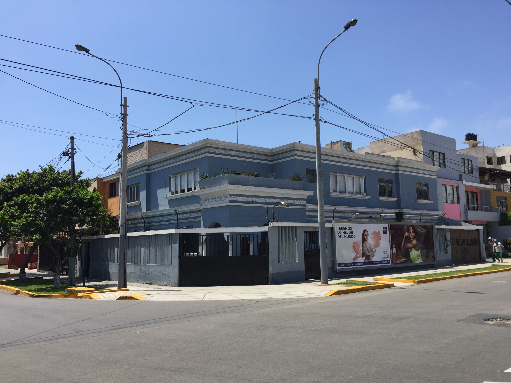
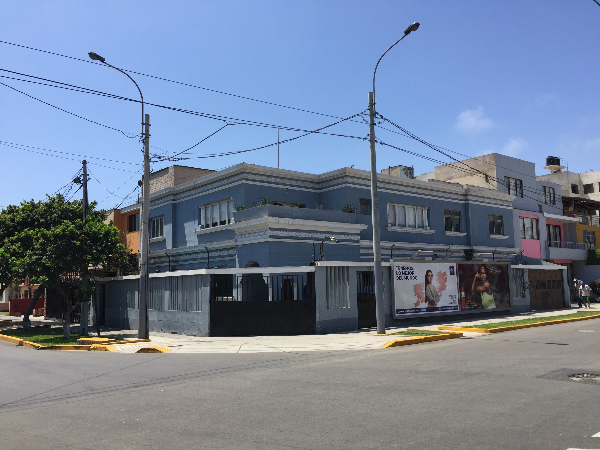
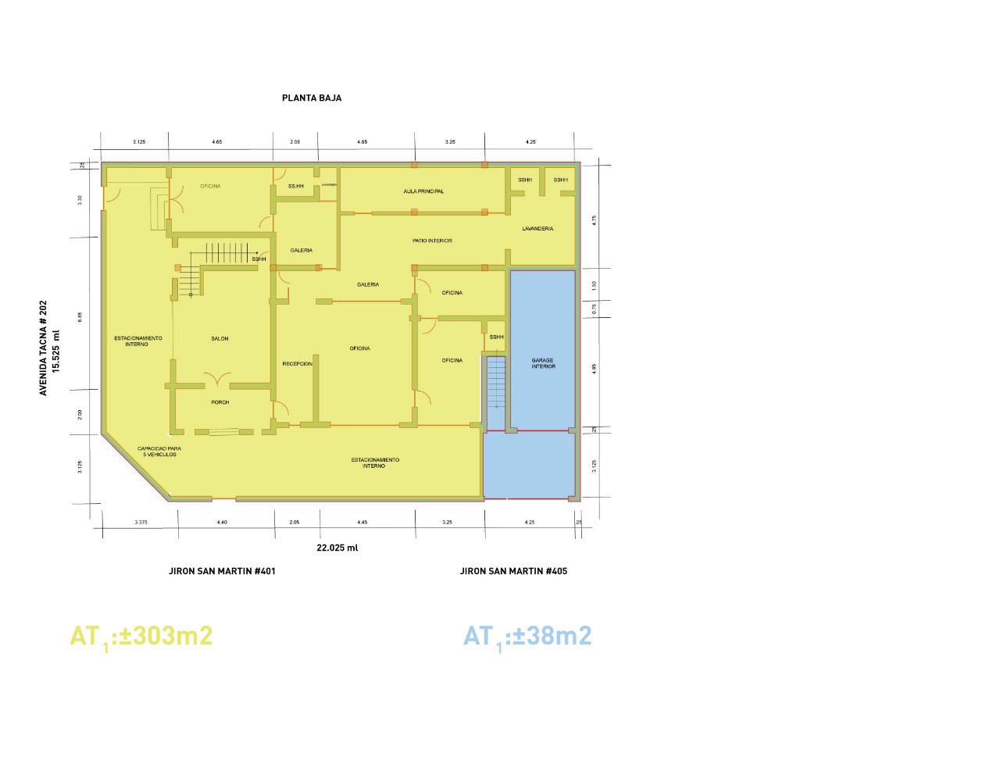
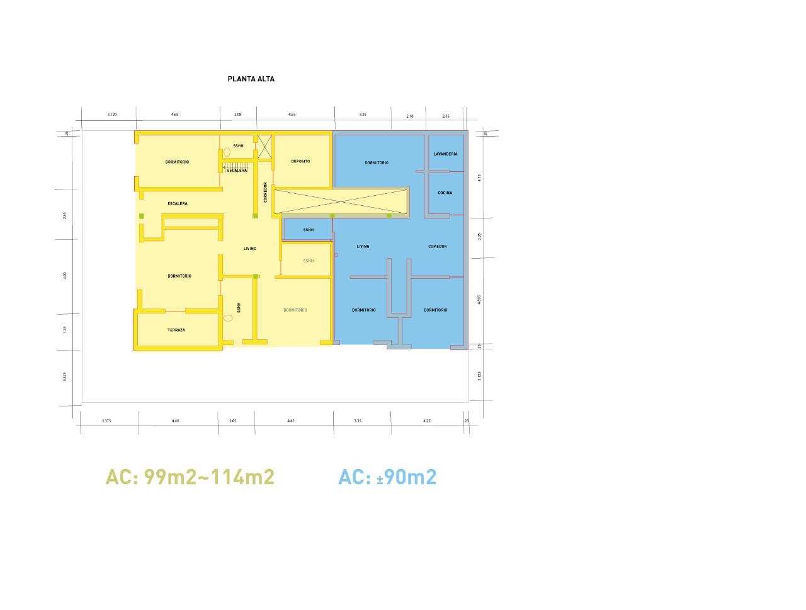

REGISTROS
(HR) LIMA 32 - DECLARACION JURADA DE IMPUESTO PREDIAL 2015(PU) LIMA 32 SAN MARTIN 401 - DECLARACION JURADA DE IMPUESTO PREDIAL 2015
(PU) LIMA 32, TACNA 202 - DECLARACION JURADA DE IMPUESTO PREDIAL 2015
EXPEDIENTE MUNICIPAL 000781-96 (23/2/1996)
GRAVAMENES 1/4
GRAVAMENES 2/4
GRAVAMENES 3/4
GRAVAMENES 4/4
Constancia actualizada de levantamiento de Hipoteca
{kind=link}
COPIA LITERAL PARTIDA 49077963 (03/09/2015)
LIMA 32 SAN MARTIN 401 REGISTRO DE PROPIEDAD /6 PARTIDA 49077963 (03/09/2015)
LIMA 32 SAN MARTIN 401 REGISTRO DE PROPIEDAD /6 PARTIDA 49077963 (27/12/2002)
CERTIFICADO DE PARAMETROS (2015)
{kind=link}
AREA (2015)
{kind=link}
HR(2015)
{kind=link}
pu pu-san-martin(2015)
{kind=link}
pu pu-san-martin(2015)
{kind=link}
foto
{kind=link}
ubicacion
{kind=link}
Toda la zonas de color amarillo le corresponden a La propiedad


Municipalidad de San Miguel Arbitrios y predial cancelados completos al (2020)
Sunarp - Registro de propiedad inmueble registro de predios certificado registral inmobiliario (2020)
Video del interior de la propiedad (2020)